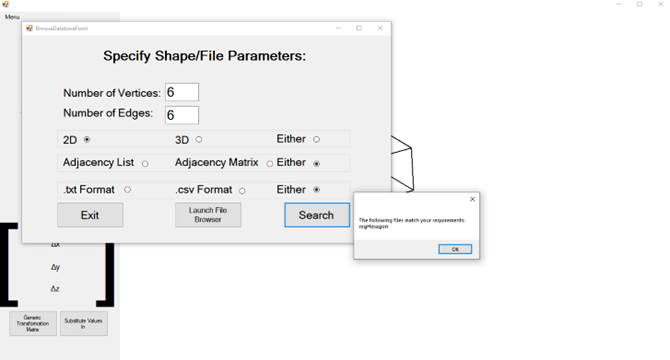

Matrix
Matrix Transformations
Code
- Written in C#, using Windows Forms to process and display graphics
- Draws shapes from their coordinates in 2D or 3D and applies matrix transformations to the coordinates to scale/rotate/translate the shapes
- When shapes are transformed using keyboard controls, the transformation matrix being used is displayed to the user, allowing the program to be used as a teaching tool
- Shapes can be generated based on specified properties (2D/3D, number of vertices) and stored as text/csv files using either an adjacency list or adjacency matrix format
- There is also a database of common shapes, which can be searched for shapes with specific properties (internally handled using SQL)


